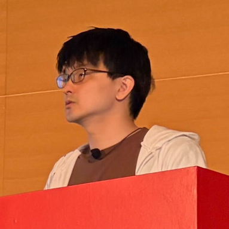

Previous slide Next slide Toggle fullscreen Toggle overview view Open presenter view
Zen and the Art of
An Inquiry into Legacies
Presentation by Uchio Kondo
Think back to 200X.
You built your first blog app with Rails scaffold.
The title and body showed up on the screen.
INTRO
What feature do you want to build next...?
INTRO
Let's talk about file upload today
INTRO
About Me
Uchio Kondo / @udzura
SmartHR, Inc.
Technology Platform Division
Favorite SmartHR feature: Personnel Orders
Favorite Rust type: Cell<T>
Fukuoka.rb / Fukuoka.wasm

INTRO
Before We Begin
This talk is more a collection of questions than a single conclusion.
Some details have been adapted; the technical substance is unchanged.
Reasonable engineers may make different calls. Let's discuss them in the hallway or at the social event.
INTRO
1. Situation
1. SITUATION
Rails and ActiveStorage
One of the most basic requirements of a web service
Today, Rails has ActiveStorage
Introduced in Rails 5.2 (2018)
1. SITUATION
B.A. (Before ActiveStorage)
Before that, no "Rail" was laid for files
Many gems competed
attachment_fu
Paperclip (deprecated in 2018)
CarrierWave / Dragonfly / RefileShrine
1. SITUATION
When It Was Built
SmartHR's application got its first commit in February 2015
A world before ActiveStorage
1. SITUATION
9 Years Later
Migrated once from Paperclip, then about 9 years on CarrierWave
32 Uploader classes · 87 mount_uploader callsUp to 8 images per model
CarrierWave is on an older version; upgrades require compatibility work
Other dependencies, especially Ruby and Rails , are kept near the latest versions
1. SITUATION
2. Split the Problem
2. SPLIT THE PROBLEM
Symptoms
2. SPLIT THE PROBLEM
The problems are tangled.
2. SPLIT THE PROBLEM
Start with Smaller Problems
“Replace CarrierWave” is too large to tackle at once
Separate file access , history behavior , and other dependencies
Choose a change small enough to implement and verify
2. SPLIT THE PROBLEM
Set Priorities Across Three Qualities
2. SPLIT THE PROBLEM
Two Main Problems Today
Given our current situation, we focus on:
File paths: keep saved files reachable
Fix fragile file paths and make them stable
History: avoid needless uploads when copying records
Tangled history logic slows down uploads
Third, briefly: maintainability — simplify dependencies.
2. SPLIT THE PROBLEM
3. Focus on File Paths
3. FOCUS ON FILE PATHS
Why Do File Paths Matter?
Past incidents involved incorrect file references
No files were lost in these incidentsAll these incidents were mitigated and resolved; affected customers were informed
Reliability comes first for HR documents
3. FOCUS ON FILE PATHS
Prerequisite: CarrierWave Lifecycle
Assign → cache! Temporary file
→
store! Persistent file
→
Retrieve Access it later
On a validation retry, a Cache ID can restore the temporary file.
3. FOCUS ON FILE PATHS
CarrierWave: Cache
3. FOCUS ON FILE PATHS
CarrierWave: Store
3. FOCUS ON FILE PATHS
File Paths Can Be Overridden Easily
Convenient customization through store_dir
Include model data such as a tenant ID or table name
Changes to that data or the method can make file paths fragile
def store_dir
"uploads/#{model.tenant_id} /#{model.class .table_name} /#{mounted_as} /#{model.id} "
end
3. FOCUS ON FILE PATHS
Complexity Leads to a Time-Based if
def store_dir
if after_hotfix?
new_store_dir
else
legacy_store_dir
end
end
Paths are not kept as snapshots, so we cannot change the logic
3. FOCUS ON FILE PATHS
The Problem and the Two Fixes
Changing model state or path rules can produce incorrect file references
In these incidents, the files remained intact; the reference data was incorrect
Fix
Record the path when…
Keep it in…
#1 cache_path the cache is created
Redis
#2 store_path the file is stored
a dedicated DB column
3. FOCUS ON FILE PATHS
ここまでのまとめ: 1. cacheとstoreがある 2. パスは開発者が壊しやすい
Fix #1: Record cache_path
Between cache and store, the calculated cache path could change
e.g., code where the path changes depending on whether an ID exists
This caused multiple incidents in the past
Fix: save the path at cache time, and never recalculate it
3. FOCUS ON FILE PATHS
Cache: Before
3. FOCUS ON FILE PATHS
Cache: After
3. FOCUS ON FILE PATHS
Cache: Result
Completed at the end of 2025, as our first improvement
Incidents caused by cache_path dropped to zero
Next: prevent store_path incidents from recurring
3. FOCUS ON FILE PATHS
Fix #2: Record store_path
We could change the identifier format, but chose a dedicated column
On read, prefer that column; otherwise, calculate as before
Backfill existing data by recalculation
Start with the most problematic Uploader, then expand
3. FOCUS ON FILE PATHS
Store: Record the Saved Path
class ApplicationUploader < CarrierWave::Uploader::Base
after :store , :persist_object_store_path
def persist_object_store_path (* )
return if should_not_store_full_path?
persisted_store_path = object_store_path_to_persist
save_object_store_path(persisted_store_path)
log_if_mismatch
end
end
Right after store, record the path in the dedicated column
NOTE: Simplified from the actual code.
3. FOCUS ON FILE PATHS
Store: Read the Recorded Path
class ApplicationUploader < CarrierWave::Uploader::Base
def store_path (*args )
calculated_store_path = super (*args)
persisted_store_path = resolve_persisted_store_path
log_if_mismatch
return calculated_store_path if persisted_store_path.nil ?
use_persisted_store_path ? persisted_store_path : calculated_store_path
end
end
No record? Use the calculated path, as before
Log any mismatch between the calculated and recorded paths
NOTE: Simplified from the actual code.
3. FOCUS ON FILE PATHS
Permanent Data Needs a Safe Rollout
A wrong stored path can outlive the rollout
Separate recording paths from using recorded paths
Verify rollback as well as the forward migration
3. FOCUS ON FILE PATHS
Store: Switch Writes, Then Reads
Step
write
read
Notes
1
Partly ON OFF
Double write for some tenants. Reads as before
2
All ON OFF
Double write for all tenants. Reads as before
3
All ON Partly ON Some tenants read from the fixed paths
4
All ON All ON All tenants read from the fixed paths
3. FOCUS ON FILE PATHS
Flipper: Roll Out and Roll Back
Use Flipper to enable write/read flags for selected tenants
Add a dedicated column alongside the existing identifier
Include rollback checks in QA
3. FOCUS ON FILE PATHS
Monitor the Rollout with BigQuery
Application data was periodically synced to BigQuery
We queried that copy to monitor the file path rollout
SELECT id, tenant_id, avatar, avatar_object_path
FROM app_mirror.employee_profiles
WHERE
(COALESCE (avatar, '' ) = '' ) != (avatar_object_path IS NULL )
OR NOT ENDS_WITH(avatar_object_path, CONCAT('/' , avatar))
NOTE: Simplified from the actual code.
3. FOCUS ON FILE PATHS
QA: Users Should See No Change
All AI-assisted QA ran in staging with no customer data
Features × preconditions create many test cases
Define user stories and expected results with AI
Keep automated tests and check human-visible evidence
3. FOCUS ON FILE PATHS
AIを用いたQAはすべて、顧客情報を含まないstaging環境で実施。
QA: Stories Become Evidence
3. FOCUS ON FILE PATHS
QA: Results and Human Review
About 30 large stories , checked in 2 days by about 3 people
Screenshots, logs, verdicts, and reasons are reviewed in PRs
Existing tests are kept; automated coverage is strengthened
The value: more cases checked , with a human final review
3. FOCUS ON FILE PATHS
Store: Current Status
Some images have fully switched to fixed paths
We will expand to all images, step by step, the same way
3. FOCUS ON FILE PATHS
File Paths: What Matters
Record a stable reference to each saved fileSeparate writes and reads to make the rollout controllable
Test the way back , not only the way forward
3. FOCUS ON FILE PATHS
まとめ: 壊れやすいパスを1:1で引けるよう固定した。
4. Focus on History
4. FOCUS ON HISTORY
Making Images and History Work
Employee history is essential to our service
Handling images is essential too
Combining them requires extra care
4. FOCUS ON HISTORY
Bitemporal Data Model and Us
4. FOCUS ON HISTORY
History Copying Has Side Effects
Our history-copy workflow + CarrierWave's assignment behaviorupload the same file again.
4. FOCUS ON HISTORY
The Fix: Mark History Copies
In the PR: CurrentAttributes carries
4. FOCUS ON HISTORY
CurrentAttributes: Into the Hook
1. Mark the scope
class HistoryCopy < AS : :CurrentAttributes
attribute :in_progress , default: false
end
def self .copying_history
HistoryCopy .in_progress = true
yield
ensure
HistoryCopy .in_progress = false
end
2. Skip the upload in the hook
def cache! (* )
return if HistoryCopy .in_progress
super
end
ApplicationUploader .copying_history do
record.copy_history!
end
NOTE: Simplified from the actual code.
4. FOCUS ON HISTORY
History: Measuring the Upcoming PR
Local run of a near-release PR : 17.0s → 9.6s (−44%) · GCS calls 39 → 22
4. FOCUS ON HISTORY
History: What Matters
Make the difference between copying a reference and uploading a file explicit
Keep lifecycle side effects under application control
Validate the history behavior before rolling out
The PR is nearly ready; the production rollout is next
4. FOCUS ON HISTORY
まとめ: 履歴実装＋画像で不要なアップロードが起こった。
5. Reducing Coupling
5. REDUCING COUPLING
The approaches in this chapter are still being designed and investigated .
The diagrams show intended boundaries , not a completed architecture.
The performance result comes from a local PoC , not production.
5. REDUCING COUPLING
疎結合化のための施策は、設計・調査段階の内容になります。
Current: Coupled Image Responsibilities
5. REDUCING COUPLING
A Simpler, Decoupled Design
5. REDUCING COUPLING
Image Operations: Find the Boundary
Nearly 300 call sites depend on CarrierWave.
Before: Uploader behavior
user.avatar.present?
Depends on the Uploader's blank?
After: Application intent
CarrierWaveCompatLayer .attached?(
user, :avatar
)
Ask whether a file is attached
Same behavior, an explicit boundary.
5. REDUCING COUPLING
Image Operations: Wrap the API
5. REDUCING COUPLING
Preprocessing: The Current Cost
Resizing, EXIF handling, and uploads — all before saving finishes.
5. REDUCING COUPLING
Preprocessing: Move It Out
Preserve required processing, including location metadata removal. Cookpad's tofu · ImageFlux
5. REDUCING COUPLING
Local PoC: 17.9s → 5.8s · fewer resized images meant fewer GCS uploads
5. REDUCING COUPLING
Clearer Boundaries, Less Work
Analyze which behaviors the application needs to preserve.Isolate CarrierWave-specific operations and image processing behind clear boundaries.Reduce synchronous work in the upload path; the local PoC suggests a performance benefit.
5. REDUCING COUPLING
まとめ: 複雑な仕様をレイヤ導入＋分析で疎結合にしたい。
6. Upgrade or Replace?
6. UPGRADE OR REPLACE?
What Could Replace CarrierWave?
6. UPGRADE OR REPLACE?
No Decision Yet
Upgrading CarrierWave and replacing it are both options
Catching up to a newer version may be the practical next step
First, simplify the behavior we must preserve
Keep application needs separate from library internals
6. UPGRADE OR REPLACE?
Whatever the Choice,Make Responsibilities Clear.
6. UPGRADE OR REPLACE?
結論はまだ出ていないが、更新にせよ、移行にせよ、
7. Takeaways
7. TAKEAWAYS
First, split the problem
7. TAKEAWAYS
Make important changes
7. TAKEAWAYS
Watch for hidden bugs
7. TAKEAWAYS
7. TAKEAWAYS
画像の複雑な仕様を、少しずつ切り出す。
“The real cycle you’re working onyourself. ”
Robert M. Pirsig, Zen and the Art of Motorcycle Maintenance
7. TAKEAWAYS
参考訳: あなたが本当に整備しているのは“あなた自身”という名のオートバイだ。
Face your problems.
7. TAKEAWAYS
Thank you!
Thanks: Team members! @eminem, @a5-stable, @yudai
【日本語版】
Zen and the Art of File Upload Maintenance
An Inquiry into Legacies
Presentation by Uchio Kondo
【日本語版】
0. 始まり （あなたのWeb開発の）
【日本語版】
- 200X年を思い出して。
- 初めてのブログアプリを、Railsのscaffoldで作った。
- タイトルと本文が画面に出た。
【日本語版】
- そう、**ファイルアップロード**の実装。
【日本語版】
今日は _ファイルアップロード_ について語ろう
【日本語版】
自己紹介
- 近藤うちお / @udzura
- 株式会社SmartHR
- 技術基盤部所属
- 好きなSmartHRの機能は発令管理
- 好きなRustの型は `Cell`
- Fukuoka.rb / Fukuoka.wasm
Talk map: seven chapters, with file paths and history as the main focus.
【日本語版】
はじめに
- この発表は、一つの結論よりも、取り組みの中で生まれた問いを共有するもの。
- 技術的な内容が変わらない範囲で、一部の詳細を改変している。
- 現場での判断には別の見方もあるはず。廊下や懇親会でぜひ議論したい。
【日本語版】
ファイルアップロード、知ってる？
- Webサービスの最も基本的な要件の一つ
- 今のRailsには **ActiveStorage** がある
- Rails 5.2（2018年）で登場
【日本語版】
B.A. (Before ActiveStorage)
- それ以前、ファイルに関する「Rail」は敷設されていなかった
- 群雄割拠のgemたち
- attachment_fu
- Paperclip（2018年に非推奨化）
- **CarrierWave** / Dragonfly / Refile
- Shrine
【メモ】
当時CarrierWaveを選ぶのは妥当な判断だった、という前振り。誰かを責める話ではない。
【日本語版】
それが作られた時代
- SmartHRのアプリケーションは2015年2月にファーストコミット
- ActiveStorage以前の世界
【日本語版】
それから9年
- 一度Paperclipから移行しつつ、CarrierWaveを使い続けて9年
- Uploaderクラス: 32
- `mount_uploader`: 87箇所
- 1モデルに最大8個の画像
- CarrierWaveは古いバージョンで、更新には既存仕様との互換性整理が必要
【メモ】
移行の経緯: 2017年5月にPaperclipからCarrierWaveへ移行し、2017年11月にPaperclipを削除（質疑用）
他のライブラリ、特にRuby・Rails本体は常にほぼ最新を維持している。今回の更新の難しさは、CarrierWaveと当社の既存仕様の互換性に関する話。
【日本語版】
症状
- パスの計算ロジックが複雑化し、何度も壊れた
- 実際に、ファイルアップロード起因の障害が何度も起きていた
- サイズ違い画像（`version`）を同期的に生成している
- アップロード時にEXIFを同期処理している
- アップロードを制御できない（履歴分割で大量に走る）
- 画像の仕様が、CarrierWave側もSmartHR側も複雑で更新できない
【日本語版】
3つの性質に優先順位をつける
1. 信頼性（Reliability）: パスが不安定で障害が起きやすい → まずファイルの参照を安定させる
2. 利用容易性（Usability）: 性能・開発生産性 → アップロードを速くする
3. 保守性（Maintainability）: バージョンアップが難しい → 今日は少しだけ触れる
【メモ】
お客様が実際に感じている障害と遅さから先に手を付けた。保守性は3番目で、今日は後半で少しだけ扱う。
セキュリティは前面に出さない（WAFなどの多層防御があることは質疑用。ライブラリ更新の代わりになるという意味ではない）。
発表の地図。主役はパスと履歴。3番目の保守性（依存整理）は、後半で少しだけ扱う補足的な展望。
今回扱う参照障害についての説明。参照のためのデータが壊れたもので、ファイル自体が消えた事例はない。過去の障害への対応完了と、再発防止のための構造改善の展開状況を区別する。
CarrierWaveの概念的な流れ。assign時にcache!が走る場合がある。正確なコールバック順序を示すものではない。
【日本語版】
CarrierWave：書き込み
【メモ】
図のCache IDは再開用のcache_nameを指す（cache_id / original_filename）。モデルのIDとは別。
画像の永続化とidentifierのDB保存は役割を示した概念図で、厳密なコールバック順序ではない。
【日本語版】
CarrierWave：読み出し・参照
【メモ】
identifierはランダムなIDを新規発行する意味ではない。
retrieve_from_store!は参照の復元で、常に画像の全バイトを取得するわけではない。
参考: https://github.com/carrierwaveuploader/carrierwave/tree/master/lib/carrierwave/uploader
【日本語版】
ファイルパスは簡単に上書きできる
- `store_dir` メソッドで上書きできる
- テナントIDやテーブル名など、モデルの情報を含められる
- モデルの状態やメソッドの変更が、パスの壊れやすさにつながる
（コード）
【メモ】
コードは抽象化したもの
【日本語版】
複雑さゆえに: 時刻によるif文
（コード）
- パスをスナップショットとして持たないので、**ロジックを変えられない**
【メモ】
振り分けの基準は created_at ではなく「更新日時」。話すときも更新日時と言う。
【日本語版】
cache_path の固定
- cacheしてからstoreするまでの間に、cache pathの計算結果が変わる
- 例: IDがある／ないでパスが変わる実装
- 過去に、この原因で複数回の障害があった
- 対策: cache時のパスを保存し、取り出すときは再計算しない
【日本語版】
変更以前
【メモ】
- ID発行されるのに、retrieveで複雑な計算があった
- ID発行の前後でそのロジックが変わると...
- ID → cache_path は一意に引けないとダメでは？
【日本語版】
変更以後
【メモ】
- cache作成のタイミングで、ID → cache_pathをRedisに保持
- 取り出すときは再計算せず、Redisから取得
- シンプルに！
- cache IDはフォームが持つので、提出している本人からは失われない。しかも本人しか知らないIDなので、鍵として安全
- 対応表はあくまでキャッシュなので、1〜2週間ほどで消える。1ヶ月後の再開は対象外（質疑用）
【日本語版】
cache_path 固定の結果
- 改善第一弾として2025年末に完了
- cache_path起因の障害は **ゼロ** になった
- 次は、store_path側でも再発を防ぐための構造改善
【日本語版】
次の山は store_path の固定
- identifierの形式を変える案もあったが、**専用のカラム** を導入する方針に
- 読むときはそのカラムを優先、なければ従来どおり計算
- 既存データはバックフィル。すべて埋まれば、フォールバックを消せる
- 問題の大きいUploaderから始めて、順次広げる
【日本語版】
実装イメージ: 書き込み側
（コード）
- store の直後に、パスを専用カラムへ記録する
【メモ】
hanicaのコードからポイントを絞り、若干改変したもの。should_not_store_full_path? が write フラグに相当。
【日本語版】
実装イメージ: 読み込み側
（コード）
- 記録がなければ、従来どおり計算したパスを使う
- 計算値と記録値の不一致は、ログで観測する
【メモ】
use_persisted_store_path が read フラグに相当。次の「戻せる設計」へのつなぎ。
【日本語版】
write / read の2フェーズフラグ
| ステップ | write | read | 備考 |
| 1 | 一部ON | OFF | 一部テナントでdouble write。参照は従来どおり |
| 2 | _全体ON_ | OFF | 全体でdouble write。参照は従来どおり |
| 3 | _全体ON_ | 一部ON | 一部テナントでdouble writeした固定パスによる参照を開始 |
| 4 | _全体ON_ | _全体ON_ | 全体で固定パスによる参照へ切り替え |
フラグがあるだけで安全とせず、戻した場合の挙動も検証する。
定期同期したBigQueryのデータに、毎日クエリを投げて監視した。
実際のクエリ（Redashの「store_path不整合チェック」、毎日22:30実行）を簡略化し、テーブル名・データセット名は伏せたもの。
見ているのは3種類の不整合: ファイルがあるのにパスがない／パスがあるのにファイルがない／パスの末尾がファイル名と一致しない。
実際のクエリでは、調査済みで既知の行を除外している。
【日本語版】
Step 2: AIがシナリオにして、実行する
【メモ】
構造化の形式はGherkinなどもあるが、今回は独自形式。
実行役のAIをAIの中で起動。やり取りはファイルとスキーマ。
図は次のStep 3まで含めた全体像。観測と判定を分け、人が最後に証跡をレビューする。
コンパイラのpassのように、各段階が成果物を次へ渡す。
【日本語版】
store_path 固定の現在地
- 一部の画像では、固定パスへ **完全に切り替わった**
- 同じ手法で、少しずつ全画像に広げていく
従業員の履歴情報も画像も重要。両方を組み合わせると、ファイルのライフサイクルに注意が必要。
【日本語版】
バイテンポラルデータモデル
【メモ】
日付は説明用。期間は開始を含み終了を含まない [from, to)。
行Aのtransaction_toを更新時刻で閉じ、行B・Cを追加する。旧行を削除して2行にするわけではない。
参考: https://github.com/kufu/activerecord-bitemporal
【日本語版】
バイテンポラルとファイルの困り事
- 履歴分割のたびに、同じファイルを持つ行が複製される
- 実装的には「前の履歴」の値コピー
- ところがCarrierWaveは、**値を代入しただけでアップロード（`cache!`）が走る**
- 見えない副作用として、不要なアップロードが走ってしまう
【日本語版】
もう一つの性能改善: 再アップロードを防ぐ
- 履歴を複製するときに **「履歴複製中」のマーク** を付ける
- その間はアップロードを回避し、同じファイルを再アップロードしない
- フック内部へ状態を伝えるため、`CurrentAttributes` を使う
- 本番投入間近のPRとして実装済み
簡略化した模擬コード。既存の VersionCacheSuppressible（承認処理中だけ version 生成を止める仕組み）と同じ形で、
CurrentAttributes でスコープを示し、CarrierWave のフック（cache!）を上書きして抑止し、ensure で必ず解除する。
リリース間近の実際のPRは別の形（同じリクエスト内で同じ store path への2回目の保存を省く）で、細部は異なる。
履歴分割時の重複アップロードを抑止する変更は、もうすぐ本番環境に入れられる状態のPRになっている。そのPRを最新のstagingにリベースし、ローカルで計測した。
操作: 実画面から「アバターいますぐ」（承認なし）の申請を提出し、既存のプロフィール画像を差し替える（申請提出 create_by_applicant）。
抑止なし／ありを交互に3回ずつ、毎回別の画像で実行した平均。
全体 17.0秒 → 9.6秒（−44%）。GCS操作 39回 → 22回。put / delete / copy がそれぞれ 11回 → 6回、get / metadata が 3回 → 2回。
1回あたりのレイテンシ（put 約430ms、delete 約300ms、copy 約225〜260ms）は前後で同じなので、短縮分は回数の削減によるもの。
対策後もGCSが全体の約70%を占める。
5章のPoC（設計・調査段階）とは違い、こちらはリリース直前のPR。ただしローカルでの計測であり、本番での効果や展開完了を示すものではない。
コピーした履歴が、期待どおりの画像を参照し続けていることも確認済み。
【日本語版】
この章で紹介する施策は、設計・調査段階にある。
図は目指す責務の境界を示すもので、実装済みの構成ではない。
後述のパフォーマンス計測はローカルPoCによるもので、本番の結果ではない。
現状の責務の絡まりを概念的に表した図。厳密な実行順やデータフローではない。
【日本語版】
複雑性の削減のために目指す姿
【メモ】
計画段階の責務・依存関係の図。矢印は画像データの転送経路ではない。
Uploaderの仕事を「決まったパスにバイト列を置く」ことへ絞り、画像処理を分離する。
既存資料の互換レイヤのコード例を再掲。Before / After は呼び出し側の比較。
present? が依存するUploaderのblank?の挙動を、互換レイヤ内部で維持する。
新しいAPI名だけでストレージ上のファイル実在確認を行うという意味ではない。
SmartHRが必要とする画像操作を互換レイヤで公開し、CarrierWave固有のAPIを内側に閉じ込める。
【日本語版】
画像の「前処理」が非常に多い
- 表示用途に合わせたサイズ違い画像（`version`）の生成
- EXIFの向き情報に基づく回転
- EXIF情報（住所など）の除去
- これらがアップロード時に**同期で**走り、保存完了までの待ち時間になる
【日本語版】
同期処理を切り出したい
- サイズ違い画像は、別サービスでオンデマンドに生成するとどうか？
- 位置情報の除去など、必要な画像処理を維持することが前提
- 同期処理から何を切り出すかを検討する。EXIF処理を必ず外部へ移すとは限らない
- 別サービスの内容はCDNに載せキャッシュすれば、負荷の懸念も小さい
- 画像変換サービス + CDN という構成は、実サービスでも多く採られている
- Cookpad の [tofu](https://www.slideshare.net/slideshow/20111102-rails-meetuptofu/10084092) を始め、色々
- [ImageFlux](https://imageflux.sakura.ad.jp/) 等専用サービスも
【質疑用】
EXIF処理の計測上の影響は相対的に小さい。既存の実行箇所に維持する可能性もあり、切り出す範囲は検討中。
おまけとしてローカル計測を紹介。申請者による作成処理（create_by_applicant）、3回の平均。
前処理あり17.9秒、なし5.8秒。GCSの往復回数も39→15回。
サイズ違い画像の生成と追加アップロードをやめたため、GCS処理も減るのは自然な結果。
本番の所要時間や改善幅を直接示すものではない。
【日本語版】
複雑な仕様を分析し、必要な振る舞いを明確にする。
CarrierWave固有の操作と画像処理を切り出し、責務の境界を作る。
同期処理の削減はローカルPoCで速度にも効果が見えたが、本番での効果は未確認。
この整理を踏まえて、次章ではCarrierWaveを更新するか置き換えるかを考える。
元の3案を同じ重みで示す。CarrierWaveを更新して使い続ける選択肢も残る。候補の採否は未決定。
更新か置き換えかは未決定。どちらでも、何をアプリ・ライブラリ・外部サービスが担うかを明確にする。
【日本語版】
“The real cycle you’re working on is a cycle called yourself.”
Robert M. Pirsig, Zen and the Art of Motorcycle Maintenance
【メモ】
試訳: あなたが本当に整備しているのは、「あなた自身」という名のオートバイだ。
技術的負債や課題に向き合うことは、自分自身の成長やエンジニアリングの姿勢に向き合うことでもある、と回収する。
【日本語版】
課題に向き合って、 自分もユーザーもハッピーに
【日本語版】
Thank you!
[udzura.jp/slides/2026/kaigionrails](https://udzura.jp/slides/2026/kaigionrails)